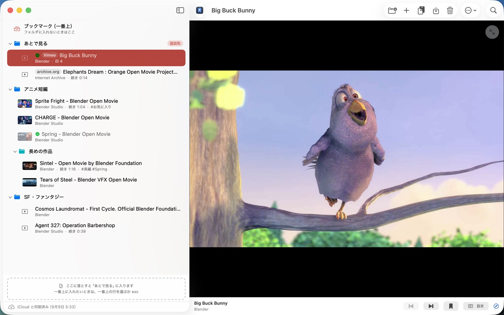
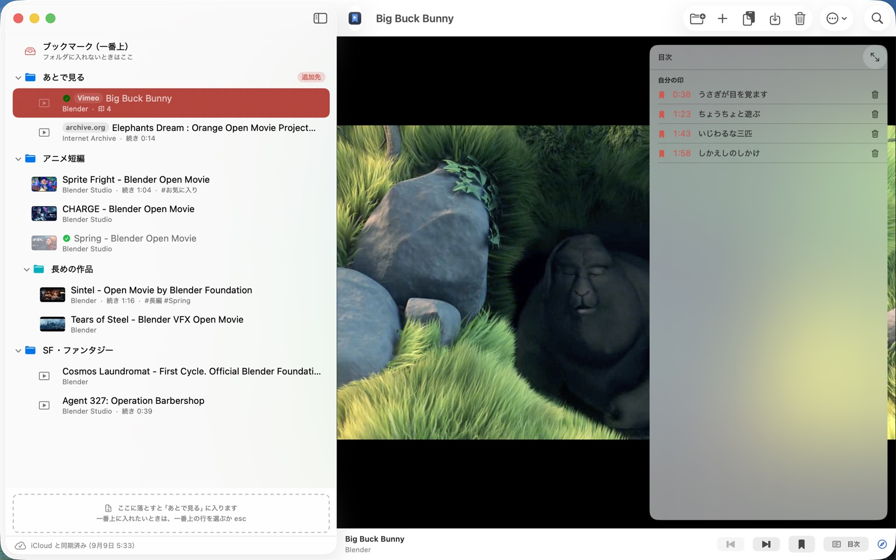
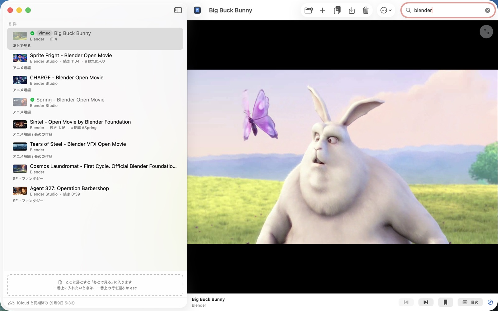
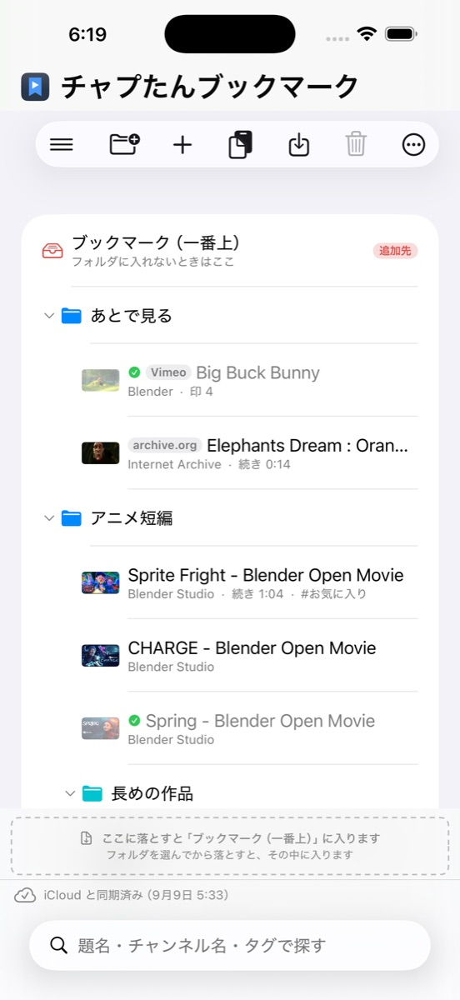
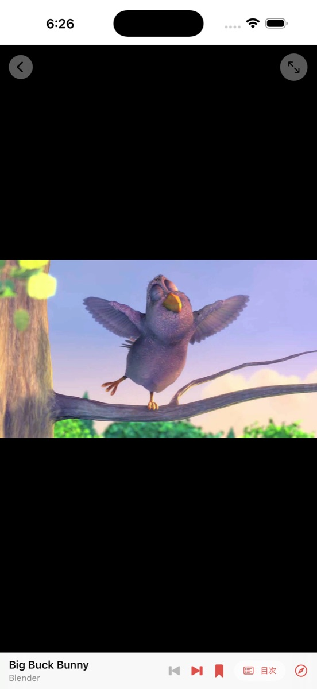

チャプたんブックマーク
動画を、フォルダの中のフォルダで整理する。
気になった動画を保存して、フォルダで整理するアプリです。フォルダの中にフォルダを作れるので、深く分けて整理できます。動画そのものだけでなく、動画の中の場面にも印を付けられます。
- Mac
- iPhone
- iPad
- 一度の購入で全部の端末に
- iCloud で同期

フォルダの中に、フォルダを
段数に決まりはありません。大きなくくりでまとめて、その中をさらに細かく分けられます。フォルダは階層ごとに色が変わるので、閉じていても入れ子だと分かります。
- 学びたいことを分野で分け、その中を科目ごと、回ごとに
- 作りたい料理を種類で分け、その中を材料ごとに
- 好きなものを人やチームで分け、その中を年ごとに
- 仕事の資料を案件で分け、その中を工程ごとに
動画の中の場面に印
再生中に旗のボタンを押すと、その場面に名前を付けて残せます。目次から選べば、その時間まで一度に飛べます。長い動画でも、見たいところを探し直さずに開けます。
いろいろなサイトの動画を
YouTube・Vimeo はアプリの中で再生でき、場面の印も付けられます。そのほかのサイトは、題名・サイト名・見出し画像が自動で入り、ブラウザで開きます。
手元の動画ファイルも1.1 から
mp4 などの動画ファイルも入れられます。場面の印や続きからの再生も同じように使えます。
Mac・iPhone・iPad で同じ棚
ご自身の iCloud を通して、3つの機器で同じ内容になります。一度お買い上げいただければ、すべての機器で使えます。
タグと検索
タグで横断的に絞り込み。題名・チャンネル名・タグで探すと、どのフォルダにあるかも出ます。
続きから・見終わった印
前に見ていた位置を覚えて、続きから再生。見終わった動画には印を付けられます。
再生リストを丸ごと
再生リストをフォルダとして丸ごと取り込めます。フォルダの中身をファイルに書き出して、同じアプリを使っている方に渡すこともできます。
消しても30日は戻せる
消したものは30日間ゴミ箱に残り、戻せます。すべてを控えに書き出しておくこともできます。
画面
横にすべらせると、ほかの画面も見られます。
Mac


iPhone


よくある質問
動画そのものは保存されますか？
いいえ。保存するのは動画への「リンク」だけです。端末の容量をほとんど使いません。アプリの中で再生するときは、YouTube と Vimeo が提供している公式の埋め込みプレイヤーをそのまま表示しています。広告も、そのサービスが出すとおりに表示されます。
動画をダウンロードできますか？
できません。動画の提供元の規約を守るため、ダウンロード機能は設けていません。
iPhone で見つけた動画を、その場で保存できますか？
できます。動画の共有ボタンから「チャプたんブックマーク」を選んでください。一覧に出てこないときは、アプリを一度開いてからお試しください。それでも出ないときは、共有の一覧を右端までスクロールし、「その他」から表示を有効にしてください。
Mac ではどうやって追加しますか？
ブラウザのアドレスバーからリンクをつまんで、画面左下の枠に落としてください。URL をコピーして ⌘V でも追加できます。あらかじめフォルダを選んでおくと、その中に入ります。
手元の動画ファイルも入れられますか？
入れられます（1.1 から）。ツールバーのフィルムのボタンから、mp4 などの動画ファイルを選んでください。場面の印や、続きからの再生も同じように使えます。動画ファイルそのものは iCloud で同期しないので、そのファイルが無い機器では一覧に出ません。
他の機器に反映されません
iCloud を通して同期しています。反映まで数分かかることがあります。画面の左下に、最後に同期できた日時が出ますのでご確認ください。初めてお使いになるときは、Apple 側の準備に時間がかかり、しばらく同期されないことがあります。
動画が再生できなくなりました
提供元で削除されたか、非公開に変更された可能性があります。設定メニューの「見られなくなった動画を調べる」で、まとめて確認できます。
保存した内容の控えは取れますか？
取れます。設定メニューの「すべてを控える（自分用）」でファイルに書き出せます。「控えから戻す」で元に戻せます。
整理した内容を人に渡せますか？
渡せます。フォルダを右クリック（iPhone・iPad では長押し）して「リストを保存」を選ぶと、その中身をフォルダの形のままファイルに書き出せます。場面の印も一緒に渡ります。
見終わった印や再生位置は書き出されません。ご自身の記録が相手に渡ることはありません。